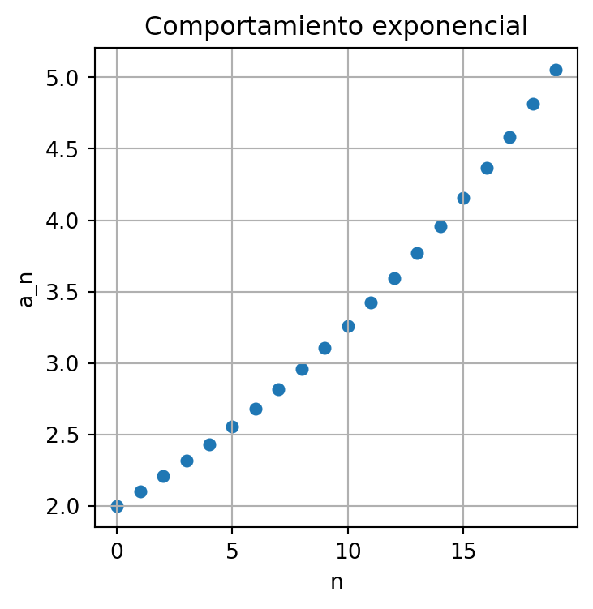
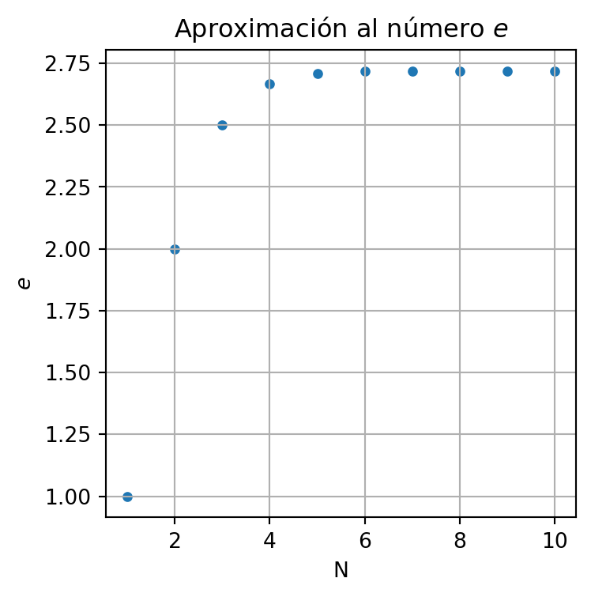
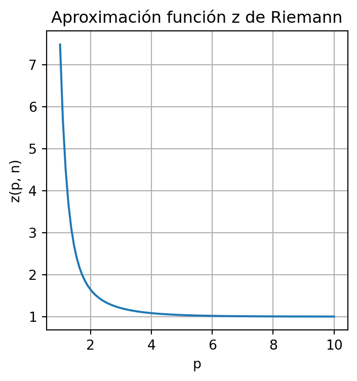
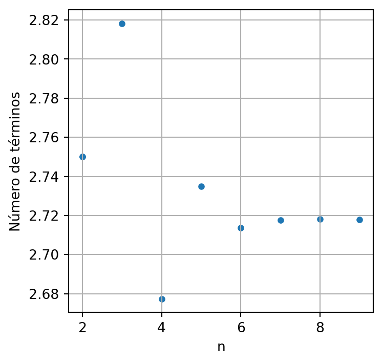
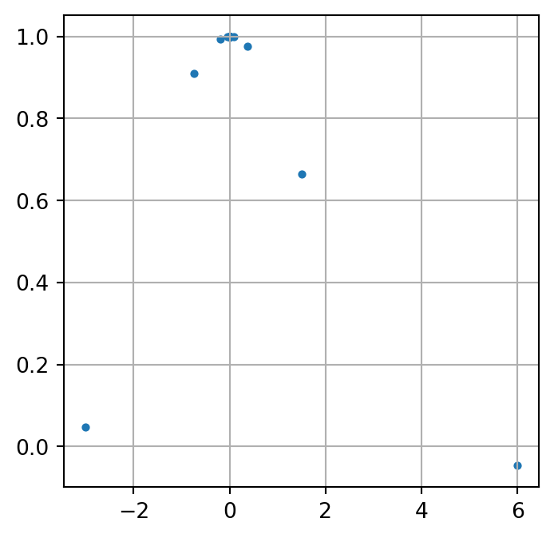

flowchart BT P((P)) --- Q((Q)) Q --- P1((P)) Q --- Q1((Q)) P1 --- Q2((Q)) Q1 --- P2((P)) Q1 --- Q3((Q)) Q2 --- P3((P)) Q2 --- Q4((Q)) P2 --- Q5((Q)) Q3 --- P4((P)) Q3 --- Q6((Q))
Elementos del cálculo integral y diferencial
Sucesiones
El concepto matemático de sucesión busca estudiar la evolución de un proceso que se construye a partir de una ley de formación.
Considere por ejemplo la siguiente asignación para las letras \(P\) y \(Q\) \[ P \to Q \quad \text{y} \quad Q \to PQ, \]
esto significa que la letra \(P\) se transforma en el paso siguiente en letra \(Q,\) mientras que la letra \(Q\) se transforma en las letras \(P\) y \(Q.\)
Supongamos que en un primer instante, digamos instante \(0,\) iniciamos en \(P.\) De acuerdo con la ley de formación en la etapa siguiente obtendríamos una letra \(Q.\) Esto lo podemos representar en la forma \[ \begin{align*} & 0: \quad P \\ & 1: \quad Q \end{align*} \] En la etapa 2 seguirían las letras \(P\), \(Q\), y de esta etapa seguirían las letras \(Q,\) \(P\) y \(Q\), es decir \[ \begin{align*} & 0: \quad P \\ & 1: \quad Q \\ & 2: \quad PQ \\ & 3: \quad QPQ \end{align*} \]
De esta manera, el resultado de la cuarta y quinta etapa serían \[ \begin{align*} & 4: \quad PQQPQ \\ & 5: \quad QPQPQQPQ \end{align*} \]
Si contamos las letras en cada etapa del proceso, o iteración como le llamaremos a partir de este momento, se obtienen los siguientes valores: \(1,\) \(1,\) \(2,\) \(3,\) \(5,\) \(8, \dots\) secuencia de números conocida como la sucesión de Fibonacci. En esta el término presente, digamos \(a_n,\) se obtiene al realizar la suma de los dos términos anteriores \(a_{n-1}\) y \(a_{n-2}.\) Esto se puede representar matemáticamente en la forma \[ a_n = a_{n-1} + a_{n-2}. \tag{1}\]
Una expresión de esta forma recibe el nombre de relación de recurrencia, y es muy útil para describir procesos en los que la información presente depende de la información pasada. En el caso de la ecuación 1 los valores correspondientes con \(a_0 = 1\) y \(a_1= 1\) se conocen como los valores iniciales de la relación de recurrencia.
Una de las aplicaciones más interesantes de las sucesiones, son aquellas en la que se modelan estructuras con crecimiento recurrente.
En la imagen se han dispuesto la asignación de las \(P\) y \(Q\) en forma vertical conectadas con una trazo simple. Este tipo de asignaciones son conocidas como L-sistemas que son una gramática a nivel computacional empleada principalmente para modelar el proceso de crecimiento de las plantas
Con el siguiente código en Python graficamos un conjunto de \(20\) puntos cuyo comportamiento es exponencial, aquí se ha tomado \(r=1.05\) y \(a_0 = 2\)
import matplotlib.pyplot as plt
nd = 20
a_0 = 2
r = 1.05
x = [k for k in range(0, nd)]
a = [a_0]
for n in range(1, nd):
a.append( r*a[n-1] )
fig,ax = plt.subplots(figsize=(4,4))
plt.scatter(x , a, s = 25)
plt.grid()
plt.xlabel('n')
plt.ylabel('a_n')
plt.title('Comportamiento exponencial')
plt.show()
Si en la ecuación 3 tomamos \(r = 1 + t\) podemos escribir la relación de recurrencia en la forma \[ \begin{cases} a_n - a_{n-1} = t a_{n-1}, \\ a_0 = a_0. \end{cases} \tag{4}\]
En este caso podríamos entender un comportamiento exponencial de un conjunto de datos como aquel en donde la diferencia entre la información presente y pasada es proporcional a la pasada. Note que la solución de 4 es \[ a_n = a_0 (1 + t)^n. \tag{5}\]
Si \(0 < t \leq 1\) esta expresión coincide con la fórmula de interés compuesto, en donde \(t\) es la tasa de interés, \(a_0\) es el capital inicial, \(n\) es el número de períodos y \(a_n\) es el capital al final del \(n-\)ésimo período.
Con el siguiente código en Python graficamos un conjunto de \(10\) puntos cuyo comportamiento se acerca de forma oscilante a \(p=5\), aquí se ha tomado \(a_0 = 24.\)
import matplotlib.pyplot as plt
nd = 10
p = 5
q = 24
x = [k for k in range(0, nd)]
a = [q]
for n in range(1, nd):
a.append((3*p - a[n-1])/2)
fig,ax = plt.subplots(figsize=(4,4))
plt.scatter(x , a, s = 25)
plt.grid()
plt.xlabel('n')
plt.ylabel('a_n')
plt.title('Aproximación oscilante al número q')
plt.show()A partir de este momento identificaremos con \(\{ a_n \}\) a una lista infinita de valores, y nos referiremos a esta como una sucesión o secuencia, cuyos elementos se pueden obtener por ejemplo a partir de una relación de recurrencia. Aquí \(a_n\) se conoce como el término \(n\)-ésimo y con él podemos encontrar cualquier elemento de la sucesión al asignarle un valor a \(n.\)
A veces es conveniente cambiar el valor en el que el dato \(n\) inicia. Por ejemplo, en algún momento puede ser necesario cambiar el inicio \(n= 0\) del término \(n\)-ésimo de la ecuación 6 por \(n = t,\) para ello hacemos la siguiente identificación.
\[ n + t = m \]
lo que indica que cuando el índice \(n\) toma el valor de cero, el índice \(m\) toma el valor de \(t.\) Note que esta expresión es equivalente a
\[ n = m - t \text{ es decir } n \equiv n - t, \]
esta última identificación es simplemente para no cambiar de letra. De acuerdo con esto la ecuación 6 se podría escribir en la siguiente forma
\[ a_n = \left( \frac{2^{n-t} }{3 + 5(n-t) }\right)^{(-1)^{n - t}} \text{ para } n = t, t + 1, t + 2, \ldots \]
Las sucesiones asociadas a la relación de recurrencia del ejemplo 1 son crecientes si \(d > 0\) y decrecientes si \(d < 0\).
Por otro lado, las sucesiones asociadas a la relación de recurrencia del ejemplo 2 para \(a_0 > 0\) son crecientes si \(r > 1\) y decrecientes si \(0 < r < 1.\)
Las sucesiones asociadas a la relación de recurrencia del ejemplo 1 son no acotadas superiormente para \(d > 0\).
Por otro lado, las sucesiones asociadas a la relación de recurrencia del ejemplo 2 para \(a_0 > 0\) son acotadas inferiormente por \(0\) si \(0 < r < 1.\)
Convergencia de sucesiones
En los dos últimos ejemplos de la sección anterior presentamos sucesiones cuyos términos se acercan a un cierto valor. Esta será nuestra labor a partir de este momento, comprender matemáticamente como un conjunto de números se aproxima tanto como se desee a otro.
A lo largo de nuestras discusiones identificaremos con \(V_r(p)\) al intervalo abierto de radio \(r\) cuyo centro es el punto \(p.\) Una forma matemática de representar este conjunto de números reales es la siguiente
\[ V_r(p) = \{x \in \mathbb{R} : \vert {x - p} \vert < r \}. \]
De manera intuitiva podríamos decir que un conjunto de números se acerca a un punto \(p\) de la recta, si a medida que hacemos más pequeño el radio \(r\) de \(V_r(p)\), seguimos encontrando al menos un elemento del mencionado conjunto. Esto se hace evidente en el ejemplo anterior, cuando tomamos \(s = 0.3\) y \(\epsilon = 0.01\) pudimos encontrar al menos un \(a_n\) con \(n = 4641590\) tal que \(a_n \in V_{0.01}(0).\)
Para esclarecer un poco más lo que hemos mencionado, es necesario entrar en algunos detalles que nos permitirán entender ciertas propiedades geométricas de los puntos sobre la recta numérica.
Las dos definiciones anteriores han permitido construir un resultado fascinante sobre los números reales y la idea del infinito.
Prueba. Supongamos sin pérdida de generalidad que la sucesión es creciente. Como el conjunto \(\{ a_n \}\) es acotado, la menor de las cotas superiores de este conjunto, digamos \(p\), verifica dos cosas, la primera es que \(a_n \leq p\) para todo \(n\), y la segunda es que dado un \(\epsilon > 0\) de nuestra elección existe al menos un elemento \(a_N\) tal que
\[ p - \epsilon < a_N, \]
ahora bien, como la sucesión es creciente entonces la desigualdad anterior es válidad para todo \(n > N\) con lo que
\[ p - \epsilon < a_n \leq p < p + \epsilon, \]
o de manera equivalentemente
\[ \vert a_n - p \vert < \epsilon \]
para todo \(n > N.\) De acuerdo con esto \(\{a_n \}\) converge a \(p\).
En este momento nos surge la pregunta: ¿ Es posible que existan varios límites para una sucesión.? Esta cuestión la resolvemos con el siguiente resultado.
Prueba. Supongamos que \(p\) y \(p'\) son dos límites de la sucesión \(\{a_n \}.\) De acuerdo con esto, dado un \(\epsilon\) de nuestra elección, existe un número \(N\) tal que
\[ \vert a_n - p \vert < \epsilon \text{ y } \vert a_n - p' \vert < \epsilon \]
para todo \(n > N.\) De acuerdo con la desigualdad triangular
\[ \vert p - p' \vert \leq \vert a_n - p \vert + \vert a_n - p' \vert < 2 \epsilon \]
con lo que \(p = p'.\)
El último comentario del ejemplo anterior se sintetiza en la siguiente definición.
La condición de Cauchy tiene varias implicaciones geométricas en el comportamiento de una sucesión.
Prueba. La demostración de este resultado es una consecuencia inmediata de la desigualdad triangular. En efecto, si \(a_n \to p\) cuando \(n \to \infty\) entonces para un \(\epsilon > 0\) de nuestra escogencia, existe un \(N\) tal que
\[ \vert a_n - p \vert < \epsilon \text{ y } \vert a_m - p \vert < \epsilon \]
para todo \(m, n > N.\) La prueba finaliza al sumar ambas desigualdades ya que
\[ \vert a_m - a_n \vert \leq \vert a_n - p \vert + \vert a_m - p \vert < 2\epsilon, \]
Prueba. Sea \(\{ a_n\}\) una sucesión de números reales, como se verifica la condición de Cauchy, entonces para un \(\epsilon > 0\) existe un \(N\) tal que
\[ \vert a_{N + 1} - a_m \vert < \epsilon \text{ para todo } m \geq N + 1 \]
esto es equivalente a decir que \(a_m \in V_{\epsilon} (a_{N+1})\) para todo \(m \geq N+1.\) Considere ahora el siguiente conjunto de números reales
\[ B = \{ \vert a_1 - a_{N + 1}\vert , \vert a_2 - a_{N+1}\vert , \ldots , \vert a_{N} - a_{N+1} \vert\}. \]
Note que \(\vert a \vert < \vert a_{N + 1} \vert + \max B + \epsilon\) para todo \(a \in \{ a_n \}\). Aquí \(\max B\) corresponde al máximo elemento del conjunto \(B.\)
Como una consecuencia de este resultado y del Teorema 1 podemos concluir lo siguiente.
Prueba. Es claro que
\[ \begin{align*} \dfrac{a_n}{b_n} & = \frac{n^{st} \left(1 + \dfrac{1}{n^{s-r}} + \dfrac{u}{n^{s}} \right)^t}{n^{pq} \left(1 + \dfrac{1}{n^{p-k}} + \dfrac{v}{n^{p}} \right)^q} \\ & = \dfrac{\left(1 + \dfrac{1}{n^{s-r}} + \dfrac{u}{n^{s-1}} \right)^t}{ \left(1 + \dfrac{1}{n^{p-k}} + \dfrac{v}{n^{p}} \right)^q} \end{align*} \]
y de acuerdo con esto
\[ \lim_{n \to \infty} \dfrac{a_n}{b_n} = 1 \]
Existe una significativa ventaja operativa al momento de calcular límites de sucesiones empleando sus límites equivalentes. Esto se hace evidente en el siguiente ejemplo
Sucesión de sumas parciales
Como una extensión natural del concepto de sucesión, se define una sucesión cuyos términos son la suma parcial de cada uno de los términos de otra sucesión. Por ejemplo, si \(\{ a_n\}\) es una sucesión, identificaremos con \(s_1\) al número \(a_1,\) con \(s_2\) al número \(a_1 + a_2,\) con \(s_3\) al número \(a_1 + a_2 + a_3\) y en general
\[ s_n = a_1 + a_2 + \cdots + a_n \tag{9}\]
Un resultado conocido es aquel en donde los términos \(\{a_n\}\) cumplen la siguiente ley de formación: \(a_0 = 1,\) \(a_1 = r,\) \(a_2 = r^{2}\) y en forma general \(a_n = r^{n}\) para una cierta cantidad \(r > 0,\) \(r \neq 1.\) Para este caso note que
\[ s_n = 1 + r + \cdots + r^{n-1} + r^{n}. \tag{10}\]
Al multiplicar esta última expresión por \(r\) obtenemos
\[ rs_n = r + r^2 + \cdots + r^{n} + r^{n+1}. \tag{11}\]
y al restar 10 de 11 obtenemos \[ s_n = \frac{1 - r^{n+1}} { 1 - r } \tag{12}\]
Otro resultado conocido es aquel en donde los términos \(\{ a_n \}\) cumplen las siguiente ley de formación \(a_0 = 1\), \(a_1 = -r\), \(a_2 = r^2\) y en general \(a_n = (-1)^n r^n.\) Al igual que el comentario anterior note que
\[ s_n = 1 - r + r^2 - r^3 + \cdots + (-1)r^n, \tag{13}\]
y al multiplicar esta expresión por \(r\) obtenemos
\[ r s_n = r - r^2 + r^3 - r^4 + \cdots + (-1)^{n-1}r^n +(-1)r^{n+1}. \tag{14}\]
\[ s_n = \frac{1 + (-1)^n r^{n+1}}{1 + r} \tag{15}\]
Es conveniente emplear una notación que permita reducir la escritura y al mismo tiempo identificar los elementos de la sucesión \(\{ a_n \}\) con su suma. Esta notación se conoce como notación de sumatoria y corresponde con el símbolo \(\sum,\) que acostumbra a escribir con sub y super índices para indicar el recorrido del parámetro asociado a la suma, es decir
\[ \sum_{k = 1}^{n} a_{k} = a_{1} + a_{2} + \cdots + a_{k}. \]
De acuerdo con esto, la expresión 12 se puede escribir como
\[ \sum_{k = 1}^{n} r^k = \frac{1 - r^{n+1}}{1 -r}. \tag{16}\]
y la expresión 15 se puede escribir como
\[ \sum_{k = 1}^{n} (-1)^k r^k = \frac{1 + (-1)^n r^{n+1}}{1 + r}. \tag{17}\]
Existe un procedimiento aritmético bastante simple para escribir la suma de los primeros enteros no negativos \(1 + 2 + 3 + \cdots + n\). Note que
\[ (k + 1)^2 - k^2 = 2k + 1, \tag{18}\]
y hagamos ahora la siguiente lista de igualdades al remplazar en la ecuación 18 el valor de \(k\) desde \(0\) hasta \(n\)
\[ \begin{align*} k = 0 : \quad & 1^2 - 0^2 = 2(0) + 1 \\ k = 1 : \quad & 2^2 - 1^2 = 2(1) + 1 \\ k = 2 : \quad & 3^2 - 2^2 = 2(2) + 1 \\ k = 3 : \quad & 4^2 - 3^2 = 2(3) + 1 \\ & \vdots \\ k = n : \quad & (n+1)^2 - n^2 = 2(n) + 1 \end{align*} \]
Al sumar las igualdades anterior obtenemos
\[ (n + 1)^2 = 2(1 + 2 + 3 + \cdots + n) + n + 1 \] con lo que
\[ 1 + 2 + 3 + \cdots + n = \frac{n(n+1)}{2} \quad \text{ para } \quad n = 1, 2, \ldots \tag{19}\]
o de manera equivalente
\[ \sum_{k = 1}^n k = \frac{n(n+1)}{2}. \tag{20}\]
Si la sucesión de sumas parciales \(\{ s_n \}\) es convergente, entonces como una consecuencia de la condición de Cauchy (véase Definición 6) para un \(\epsilon > 0\) de nuestra elección, existe un entero \(N\) tal que
\[ \vert s_{n} - s_{n-1} \vert < \epsilon \text{ para todo } n > N - 1 \]
o de manera equivalente
\[ \vert a_n \vert < \epsilon \text{ para todo } n > N - 1, \]
lo que significa que \(a_n \to 0\) cuando \(n \to \infty.\) Estos comentarios se resumen en el siguiente resultado.
Un resultado interesante y de gran utilidad es una consecuencia inmediata de la ecuación 16 y del Ejemplo 7. Este establece que si \(0 < r < 1\) entonces
\[ \sum_{n = 0}^{\infty} r^{n} = \frac{1}{1-r}. \tag{26}\]
Note que en este caso \(a_n = r^n\) y \(a_n \to 0\) cuando \(n \to \infty\).
De manera equivalente a la notación de sumatorio, también existe una para los productos. Esta es \(\prod_{k = 1}^{n} a_{n}\) y corresponde con
\[ \prod_{k = 1}^{n} a_{k} = a_1 \cdot a_2 \cdot \cdots \cdot a_n. \]
Empleando esta notación y la ecuación 26 se puede probar fácilmente el siguiente resultado
Prueba. Note que para todo \(a_n\) , con \(n = 1, 2, \ldots\) se cumple
\[ \frac{1}{a_k} \leq \frac{1}{a - \delta} \]
y de acuerdo con esto
\[ \sum_{n = 1}^{\infty} \left( \prod_{k = 1}^{n}\frac{1}{a_{k}} \right) \leq \sum_{n = 1}^{\infty} \frac{1}{(a - \delta)^n}. \]
La prueba finaliza al hacer \(r = 1/(a - \delta)\) en 26
Note que si \(\delta = 0\) entonces \(a_n = a\) para todo \(n,\) y en este caso el resultado coincide con la igualdad que se ha presentado en la ecuación 26 para el caso \(r = 1/a.\)
Prueba. Como \(a_n \geq 2\) para todo \(n,\) entonces para \(a_1\) y \(a_2\) se verifica que
\[ a_1 a_2 \geq 2 a_1 = a_1 + a_1 \geq 2 + a_1 > 1 + a_1, \]
de manera equivalente para \(a_1\), \(a_2\) y \(a_3\) se tiene que
\[ a_1 \cdot a_2 \cdot a_3 \geq 2 a_1 \cdot a_2 = a_1 \cdot a_2 + a_1 \cdot a_2 > 1 + a_1 + a_1 \cdot a_2, \]
la prueba finaliza al aplicar inducción sobre el subíndice \(n.\)
Al dividir cada término de 27 por \(\prod_{i = 1}^{k}a_{i}\) y al reescribir el sentido de los subíndices desde \(1\) hasta \(n\) obtenemos de forma inmediata el siguiente resultado.
Si en 28 sumamos por una cantidad \(p\) a ambos lados de la desigualdad obtenemos
\[ p < p + \frac{1}{a_1} + \frac{1}{a_1 \cdot a_{2}} + \cdots + \frac{1}{\prod_{k = 1}^{n-1}a_{k}} +\frac{1}{ \prod_{k = 1}^{n} a_{k} } < p + 1 \]
Lo que nos sugiere una interesante forma de aproximar un número comprendido entre \(p\) y \(p+1\), encontrando números adecuados \(a_1\), \(a_2\), \(a_3\), etc
Supongamos por ejemplo que \(m\) es una cierta constante numérica comprendida entre \(p\) y \(p+1\). Si buscamos una aproximación de \(m\) en la forma \(m \approx p + \dfrac{1}{a_1}\) el valor de \(a_1\) estaría dado por
\[ a_1 = \left \lfloor{\frac{1}{m - p}}\right \rfloor, \]
y para una aproximación de la forma \(m \approx p + \dfrac{1}{a_1} + \dfrac{1}{a_1 \cdot a_2}\) el valor de \(a_2\) , después de estimar \(a_1\) sería
\[ a_2 = \left \lfloor{\dfrac{1}{a_1 \left( m - p - \dfrac{1}{a_1} \right)}}\right \rfloor \]
y de esta forma encontraríamos recursivamente los términos \(a_3\), \(a_4\), etc para obtener una mejor aproximación de \(m\).
El siguiente algoritmo sigue el procedimiento antes mencionado para encontrar una lista de valores \(a_1,\) \(a_2\), hasta \(a_5\) que permita aproximar el valor 3.1415926
import numpy as np
n = 3.1415926 #Constante numérica
df = np.floor(n)
"""
Función que calcula la aproximación numérica a partir de
la lista de valores
"""
def aprox(lista):
b = 1
s = df
for i in range(0, len(lista)):
b *= lista[i]
s += 1/b
return n - s
"""
Función que crea la lista con los valores de a partir de la aproximación
numérica
"""
datos = [np.ceil(1/(n - df))]
def carga_lista(num_datos):
i = 1
p = 1
while i <= num_datos:
p *= datos[i-1]
a = np.ceil(1/(p*aprox(datos)))
datos.append(a)
i += 1
return datos
print(f'Lista de valores a_n : {carga_lista(4)}')
print(f'El valor escrito de la constante numérica es: {n}')
print(f'El valor obtenido de la aproximación numérica es {np.abs(aprox(datos) - n)}')
print(f'El error de aproximación es: {np.abs(aprox(datos))}')Lista de valores a_n : [8.0, 8.0, 17.0, 19.0, 449.0]
El valor escrito de la constante numérica es: 3.1415926
El valor obtenido de la aproximación numérica es 3.1415925999986207
El error de aproximación es: 1.3793410857942945e-12El resultado del algoritmo indica que
\[ 3.14159259 \approx 3 + \frac{1}{8} + \frac{1}{8 \cdot 8} + \frac{1}{8 \cdot 8 \cdot 17} + \frac{1}{8 \cdot 8 \cdot 17 \cdot 19} + \frac{1}{8 \cdot 8 \cdot 17 \cdot 19 \cdot 449} \]
Si en 28 tomamos \(a_1 = 2\) , \(a_2 = 2\), \(a_3 = 3\) y en general \(a_n = n\) obtenemos
\[ 0 < \frac{1}{2!} + \frac{1}{3!} + \frac{1}{4!} + \cdots + \frac{1}{(n-1)!} + \frac{1}{n!} < 1 \tag{29}\]
y al sumar 2 a ambos lados de la desigualdad, encontramos que
\[ 2 < 2 + \frac{1}{2!} + \frac{1}{3!} + \frac{1}{4!} + \cdots + \frac{1}{(n-1)!} + \frac{1}{n!} < 3 \tag{30}\]
para todo entero \(n.\)
El número entre 2 y 3 al que se aproxima este valor se denota comúnmente con la letra \(e,\) y se define como
import numpy as np
import math
import matplotlib.pyplot as plt
N = np.linspace(1, 10, 10, dtype=int)
def aprox_e(n):
terminos = [1/math.factorial(i) for i in range(n)]
return np.sum(terminos)
plt.figure(figsize=(4,4))
plt.scatter(N, [aprox_e(n) for n in N], s=14)
plt.grid()
plt.title("Aproximación al número $e$")
plt.xlabel("N")
plt.ylabel("$e$")
plt.show()
Númericamente se puede experimentar con una versión modificada del código anterior para obtener más cifras decimales del número \(e\).
En el siguiente programa obtenemos las primeras cien cifras de \(e\) para un valor de \(n = 71\) en la función aprox_\(e(n)\) del código anterior.
import numpy as np
import math
from decimal import Decimal
from decimal import getcontext
getcontext().prec = 101
def aprox_e(n):
terminos = [Decimal(1)/Decimal(math.factorial(i)) for i in range(n)]
return np.sum(terminos)
print(aprox_e(71))2.7182818284590452353602874713526624977572470936999595749669676277240766303535475945713821785251664274Para las series podemos identificar algunas propiedades que nos permiten determinar su convergencia. Verificaremos esto a partir del comportamiento exponencial de un conjunto de datos.
Estas observaciones se pueden generalizar para el estudio de otras series. En efecto, si tenemos una serie \(\sum_{n = 1}^{\infty}a_n\) que verifica
\[ \lim_{n \to \infty} \frac{a_{n+1}}{a_n} = r, \]
Entonces para un \(\epsilon > 0\) de nuestra elección existe un entero \(N\) tal que
\[ \Big\vert \frac{a_{n+1}}{a_n} - r \Big\vert < \epsilon \text{ para todo } n > N \]
o de manera equivalente
\[ (r - \epsilon) a_{n} < a_{n + 1} < (r + \epsilon) a_n, \]
de acuerdo con esto
\[ (r - \epsilon)^k a_n < a_{n + k} < (r + \epsilon)^k a_n \]
y si identificamos con \(r^+ = r + \epsilon\) y con \(r^- = r - \epsilon\) entonces se sigue de la ecuación 16
\[ \frac{r^- - (r^-)^{m+1}}{1 - r^-} a_n < \sum_{k= 1}^{m} a_{n+k} < \frac{r^+ - (r^+)^{m+1}}{1 - r^+} a_n \]
De manera que si \(0 < r < 1\) entonces siempre es posible encontrar un \(\epsilon >0\) tal que \(r^-\) y \(r^+\) esten comprendidos igualmente entre \(0\) y \(1\) y de acuerdo con esto.
\[ \frac{r^-}{1 - r^-} a_n < \sum_{k= 1}^{\infty} a_{n+k} < \frac{r^+ }{1 - r^+} a_n \]
Podemos sacar provecho del ejemplo anterior para demostrar una interesante desigualdad que nos será útil a lo largo del documento.
Tomemos \(q = 1\) en la ecuación 32. Note que \(a_n\) es creciente y como ya se ha visto \(a_n \to 1 - p\) cuando \(n \to \infty.\) De acuerdo con esto
\[ \frac{n - n^{p}(n - 1)^{1-p}}{1 - p} \geq 1 \quad \text{ para } \quad n = 2, 3, 4, \ldots \tag{35}\]
y después de un par de manipulaciones algebráicas,
\[ \frac{1}{n^p} \leq \frac{n^{1-p} - (n -1)^{1-p}}{1 - p}. \tag{36}\]
Al sumar desde \(k = 2\) hasta \(n\), obtenemos
\[ \sum_{k=2}^{n}\frac{1}{k^p} \leq \frac{1}{1-p}\sum_{k=2}^{n} \left( k^{1-p} - (k -1)^{1-p} \right) = \frac{n^{1-p} - 1}{1 - p} \]
y sumando 1 a ambos lados de la desigualdad
\[ \sum_{k=1}^{n}\frac{1}{k^p} \leq \frac{n^{1-p} - p}{1 - p} \tag{37}\]
Si en \(n^{1-p}\) tomamos \(p>1\) se sigue del Ejemplo 6
\[ n^{1 - p} = \frac{1}{n^{p-1}} \to 0 \text{ cuando } n \to \infty \]
y de acuerdo con esto hemos probado el siguiente resultado.
Uno de los resultados para la convergencia de series, que se desprenden de forma natural a partir de la definición de la convergencia de sucesiones, es el siguiente
En el siguiente código es Python se estudia la sucesión de sumas parciales \(\{s_n\}\) con \(n\) desde \(1\) hasta \(50\) de la sucesión \(\{\sin{n} / n^2\}\).
import matplotlib.pyplot as plt
import numpy as np
nd = 50
def a(n):
return np.sin(n)/n**2
def suc_suma(n):
s = []
for k in range(1, n+1):
s.append(a(k))
return np.sum(s)
sn = [suc_suma(n) for n in range(1, nd+1)]
plt.figure(figsize=(4,4))
plt.scatter(range(1, nd+1), sn, s = 10)
plt.grid()
plt.title('Comportamiento de la sucesión de sumas parciales')
plt.xlabel('n')
plt.ylabel('s_n')
plt.show()
datos = [sn[len(sn) - 5 + k] for k in range(0,5) ]
print(f'los últimos 5 datos de la sucesión de sumas parciales son: {datos}')los últimos 5 datos de la sucesión de sumas parciales son: [1.0143385311629363, 1.0143944719156504, 1.0140610280522284, 1.0136637966266726, 1.013558846685191]La función \(\zeta\) de Riemann
Una función de gran importancia en matemáticas, es la función \(\zeta\) de Riemann, definida como
\[ \zeta(p) = \sum_{n=1}^{\infty} \frac{1}{n^p} \]
en el siguiente código se muestra el gráfico de la aproximación de la función sumando los primeros \(1000\) términos de la serie con valores de \(p\) entre 1 y 10.
import numpy as np
import matplotlib.pyplot as plt
x = np.linspace(1, 10, 100)
def z(p , n ):
lista = [ 1/(k**p) for k in range(1,n - 1) ]
return np.sum(lista)
plt.figure(figsize=(4,4))
plt.plot(x, [z(k, 1000) for k in x ])
plt.title("Aproximación función z de Riemann")
plt.xlabel("p")
plt.ylabel("z(p, n)")
plt.grid()
plt.show()
Una relación fascinante entre la función \(\zeta\) de Riemann y los números primos se desprende de los trabajos que realizó el matemático Leonar Euler sobre series de números reales, este establece que
\[ \sum_{1 \leq n} \frac{1}{n^s} = \prod_{p \in \mathbb{P}}\frac{1}{1 - p^{-s}} \] en donde \(\mathbb{P}\) es el conjunto de los números primos.
Con el siguiente código generamos la superposición de dos gráficos, entre la aproximación numérica de la función \(\zeta\) de Riemann y el productorio de los números primos. Se ha generado una función (\(tp(n)\))que identifica si \(n\) es un número es primo o no y se han tomado los primos menores o iguales que \(n = 100.\)
import numpy as np
import matplotlib.pyplot as plt
x = np.linspace(1, 10, 100)
"""
Identificaremos los numeros primos menores o iguales que n
"""
n = 100
"""
Definición de la aproximación a la función z de Riemann
"""
def z(s , n ):
lista = [ 1/(k**s) for k in range(1,n - 1) ]
return np.sum(lista)
"""
Vamos a crear una función que permita identificar si un número n es primo o no.
Esta función devuelve 1 si el número es primo y 0 en caso contrario.
"""
def tp(n):
rn = np.sqrt(n)
for k in range(2, int(rn) + 1):
if n % k == 0:
return 0
return 1
"""
En esta lista vamos a almacenar los números primos menores o iguales que n
"""
listap = [p for p in range(2, n) if tp(p) == 1]
"""
Productorio de números primos. 1/(1- p^-s) = p^2/(p^2 - 1)
"""
def ap(s, lista):
aprox = [p**s/(p**s - 1) for p in listap]
return np.prod(aprox)
plt.figure(figsize=(4,4))
plt.plot(x, [z(k, 10000) for k in x ], label="z(s)")
plt.plot(x, [ap(k, listap) for k in x ], label="Apro. Prod. Primos")
plt.title("Comparación función z de Riemann y prod. Primos")
plt.xlabel("s")
plt.ylabel("z(s, n)")
plt.grid()
plt.legend()
plt.show()La serie armónica
Una serie conocida por su lento crecimiento y que no es convergente, es la serie armónica, definida como \(\zeta(1)\) es decir
\[ \sum_{n = 1}^{\infty} \frac{1}{n} = 1 + \frac{1}{2} + \frac{1}{3} + \frac{1}{4} + \frac{1}{5} \cdots \]
Si \(\{ s_n \}\) denota la sucesión de sumas parciales, se puede probar que
\[ 1 + \frac{n}{2} \leq s_{2^n}, \]
y de acuerdo con esto, la serie armónica es divergente.
Con el siguiente código estimamos el número de términos de la sucesión de sumas parciales, asociada a la serie armónica, para obtener un determinao valor, note por ejemplo que se requieren más de 12000 términos para que la suma sea mayor o igual que 10.
import numpy as np
import matplotlib.pyplot as plt
N = np.linspace(1, 10, 10, dtype=int)
def lar(n):
armonica = [1]
k = 2
while np.sum(armonica) < n:
armonica.append(1/k)
k = k + 1
return len(armonica)
plt.figure(figsize=(4,4))
plt.scatter(N, [lar(n) for n in N], s=14)
plt.grid()
plt.ylabel('Número de términos')
plt.xlabel('n')
plt.show()Con el siguiente código realizamos los cocientes dos a dos de términos consecutivos de los datos que ha arrajado el código anterior.
"""
cálculo de cocientes dos a dos términos consectivos
"""
N = np.linspace(2, 9, 9, dtype=int)
plt.figure(figsize=(4,4))
plt.scatter(N, [lar(n+1)/lar(n) for n in N], s=14)
plt.grid()
plt.ylabel('Número de términos')
plt.xlabel('n')
plt.show()
Note que la sucesión de cocientes parece converger a \(e,\) entraremos en estos detalles más adelante.
Continuidad de funciones
La palabra continuidad surge en muchos contextos, y la asociamos cuando queremos hacer referencia a un proceso que no tenga saltos abruptos o interrupciones. Esto claro esta suponiendo de ante mano que se conoce cual debería de ser el comportamiento esperado de dicho proceso, para categorizar un salto o interrupción como algo anómalo.
Límite de una función
En el capítulo anterior definimos y encontramos el límite de sucesiones. En esta sección encontramos el límite de una función y profundizaremos un poco más en la naturaleza de los puntos sobre la recta y como la imagen de estos a través de una función empiezan a orbitar alrededor de un valor, o alejarse cada vez más y más de algún valor de referencia. A lo largo de este capítulo emplearemos las notaciones \(V^+_r(p)\) y \(V^-_r(p)\) para referirnos a los conjuntos
\[ V^+_r(p) = \{x \in \mathbb{R} : 0 \leq x - p < r \}, \] y
\[ V^-_r(p) = \{x \in \mathbb{R} : 0 \leq p - x < r \}. \]
Se sigue de manera natural a partir de la definición del límite de una función que si
\[ \lim_{x \to p} f(x) = l \text{ si y sólo si } \lim_{x \to p+} f(x) = \lim_{x \to p-} f(x) = l \]
Por otro lado, note que la función \(f\) no necesarimente debe estar definida en \(p\) para que su límite existe.
Note que de acuerdo con la definición de límite, lo anterior es equivalente a decir que \(f\) es continua en \(p\) si para cada \(\epsilon\) de nuestra elección, existe un \(\delta\) tal que
\[ \vert f(x) - f(p )\vert < \epsilon \text{ siempre y cuando } \vert x - p \vert < \delta \text{ para todo } x \in V_{\delta} \cap S. \]
o de manera equivalente
\[ f(V_{\delta}(p)) \subset V_{\epsilon}(f(p)), \]
y esto sugiere que si \(\{ a_n \}\) es una sucesión arbitraria de números reales tal que \(a_n \to p\) cuando \(n \to \infty,\) entonces la sucesión \(\{ f(a_n) \}\) es tal que \(f(a_n) \to f(p)\) cuando \(n \to \infty.\)
En el siguiente cógido graficamos la imagen de la sucesión oscilante del Ejemplo 4 con \(p = 0\) a través de la función \(f(x) = \sin(x)/x\). Note que aunque se han tomado \(100\) puntos en el gráfico parecen distinguirse cera de \(5,\) los demás se han empezado a acumular cerca de \(1.\)
import numpy as np
import matplotlib.pyplot as plt
"""
Aquí p será el punto de al que converge la sucesión.
"""
p = 0
nd = 100 #número de datos
q = 6
x = np.linspace(1,nd, nd, dtype = int)
a = [q]
for n in range(1, len(x)):
a.append((3*p - a[n-1])/2)
"""
función a estudiar
"""
def f(t):
return np.sin(t)/t
plt.figure(figsize = (4,4))
plt.scatter(a, [f(k) for k in a], s = 8)
plt.grid()
plt.show()
En el siguiente cógido graficamos la imagen de la sucesión oscilante del Ejemplo 4 con \(p = 3\) a través de la función \(f(x) = \lfloor x \rfloor\). Se han tomado \(100\) puntos y en el gráfico parecen acumularse a la derecha de \(4\) en valor de \(4\) y a la izquierda de \(4\) en el valor de \(3\).
import numpy as np
import matplotlib.pyplot as plt
"""
Aquí p será el punto de al que converge la sucesión.
"""
p = 4
nd = 100 #número de datos
q = 6
x = np.linspace(1,nd, nd, dtype = int)
a = [q]
for n in range(1, len(x)):
a.append((3*p - a[n-1])/2)
"""
función a estudiar
"""
def f(t):
return np.floor(t)
plt.figure(figsize = (4,4))
plt.scatter(a, [f(k) for k in a], s = 8)
plt.grid()
plt.show()Es importante resaltar que en el ejemplo anterior se hace manifiesta la dependencia que tiene \(\delta\) con respecto del punto \(p\) y \(\epsilon,\) es decir \(\delta \equiv \delta(p, \epsilon).\)
Un cambio en el conjunto \(S\) de este ejemplo va a cambiar por completo la dependencia con respecto de \(p\) de \(\delta.\) En efecto, considere ahora un punto \(a\) con \(0 < a < 1\) y la función \(f(x) = 1/x\) definida en \(S = [a, 1).\) Note que dado un \(\epsilon > 0\) se verifica que
\[ \frac{\epsilon a^2}{1 + \epsilon a} \leq \frac{\epsilon p^2}{1 + \epsilon p} \text{ para todo } p \in S. \]
De acuerdo con esto, dado \(\epsilon > 0,\) tomando \(\delta = \epsilon a^2 / (1 + \epsilon a),\) note que \(\delta \equiv \delta(\epsilon),\) se verifica que
\[ f(V_{\delta}(p)) \subset V_{\epsilon}(f(p)), \]
para todo \(p \in S.\)
La situación aquí presentada motiva la siguiente definición.
Consecuencias de la continuidad
La continuidad de un proceso tiene una bella propiedad que nos permite en cierto sentido predecir el comportamiento en una cierta vecindad de un valor, si tenemos suficiente información sobre el comportamiento de este proceso en dicho valor.
Prueba. Como \(f\) es continua en \(p,\) entonces para un \(\epsilon > 0\) de nuestra escogencia, existe un \(\delta\) tal que
\[ f(p) - \epsilon < f(x) < f(p) + \epsilon \text{ para todo } x \in V_{\delta}(p) \]
la prueba finaliza a tomar cualquier valor \(\epsilon < f(p)\)
Prueba. Consideremos el conjunto \(\mathcal{A} = \{ x \in S: f(x) > 0 \}.\) Como \(\mathcal{A}\) es no vacío y acotado, entonces es plausible pensar en la existencia de un elemento \(p \in S\) tal que \(x \leq p\) para todo \(x \in \mathcal{A}\) y que dado \(\delta > 0\) de nuestra elección, se verifica que \(p - \delta < x\) para algún \(x \in \mathcal{A}.\)
Vamos a probar que \(f(p) = 0.\) En efecto, si \(f(p) > 0\) de acuerdo con el Teorema \(\ref{teo:signo}\) existe \(V_{\delta}(p)\) tal que \(f(x) > 0\) para todo \(x \in V_{\delta}(p)\) y de acuerdo con esto existe al menos un \(x\) con \(p < x < p + \delta\) tal que \(f(x) > 0\) y esto contradice el echo de que \(x \leq p\) para todo \(x \in \mathcal{A}\).
Por otro lado, si \(f(x) < 0\) de acuerdo con el Teorema \(\eqref{teo:signo}\) existe \(V_{\delta}(p)\) tal que \(f(x) < 0\) para todo \(x \in V_{\delta}(p),\) y de acuerdo con esto para todo \(x\) tal que \(p - \delta < x\) se tiene que \(f(x) > 0,\) lo que es una contradicción con el echo de que dado \(\delta > 0\) de nuestra elección, se verifica que \(p - \delta < x\) para algún \(x \in \mathcal{A}.\)
Prueba. Note que la función \(h(x) = f(x) - c\) verifica las hipótesis del Teorema \(\ref{teo_bolzano}\).
Integración
En este capítulo buscaremos entender y realizar una escritura matemática de un antiguo método desarrollado por los griegos conocido como método exhaustivo que consistía en encontrar un estimativo del área de una región descomponiendo esta en regiones más simple para las que fuese sencillo calcular el área. De esta forma el área de la región desconocida sería la suma de todas las áreas conocidas.
Funciones evaluadas en particiones de un intervalo
Prueba. Realizaremos la prueba de la desigualdad en un solo sentido, la otra se sigue de forma similiar.
Como \(f(x) \leq M\) para todo \(x \in \Omega\) entonces para toda partición \(P\) de \(\Omega\) se tiene que \[ S(P, f, g) = \sum_{k = 1}^{n} f_k \Delta g_k \leq M \sum_{k=1}^{n} \Delta g_k \leq M (g(b) - g(a)). \]
Es importante mencionar que para cada refinamiento de una partición de \(\Omega\) obtenemos un nuevo valor de la suma \(S(P, f,g )\) en este sentido podríamos pensar en la convergencia de la sucesión \(\{ S(P, f, n) \}\) que en algunos casos se puede concluir fácilmente.
Prueba. Sea \(P\) una partición de \(\Omega\), es claro que si \(P'\) es un refinamiento de \(P\) entonces \[ S(P, f, g ) \leq S(P', f, g) \] y por lo tanto la sucesión \(\{ S(P, f, g) \}\) es creciente. Por otro lado, de acuerdo con el teorema 13 la sucesión es acotada y por lo tanto se sigue del teorema 2 que la sucesión es convergente.
En el siguiente código verificamos la convergencia de la sucesión \(\{ S(P, f, g) \}\) para distintas particiones \(P\) de \(\Omega = [1,3]\) con \(f(x) = e^{x}\) y \(g(x) = x^2.\)
import numpy as np
import matplotlib.pyplot as plt
from numpy import linalg as LA
def f(x):
return np.exp(x)
def g(x):
return x**2
def P(a,b,n):
return np.array([a + (k/n)*(b - a) for k in range(0, n+1)])
def Pg(a,b,n):
return np.array( [g(P(a,b,n)[k]) for k in range(0, n+1)] )
def DPg(a,b,n):
return np.diff(Pg(a,b,n))
def Vf(a,b,n):
return np.array([ f(P(a,b,n)[k] + np.random.rand()*( P(a,b,n)[k+1] - P(a,b,n)[k] )) for k in range(0, n)])
def INT(a, b, n):
return np.round(np.dot(DPg(a,b,n), Vf(a,b,n)), 3)
a = 1
b = 3
n = 190
valores = [INT(a, b, k) for k in range(10, n + 10, 10)]
particion = [k for k in range(10, n + 10, 10)]
plt.figure(figsize = (4, 3))
plt.scatter(particion, valores, s = 8)
plt.title('Convergencia de la sucesión {S(P, f, g)}')
plt.xlabel('Número de elementos en las particiones')
plt.ylabel('Valor de la suma')
plt.grid()
plt.show()Integral de Riemann - Stieltjes
Diremos que una función \(f\) es Reimann-Stieltjes integrable en un intervalo \(S = [a,b]\) con respecto de \(g,\) si existe un número \(I,\) tal que para cada $ $ de nuestra elección, existe una partición \(P_\epsilon \equiv P(\epsilon)\), tal que
\[ \vert S(P, f, g) - I\vert < \epsilon. \]
El número \(I\) se representa como \(I = \int_{a}^{b} f(x) \, dg(x)\) y se lee: `` la integral de \(f\) con respecto de \(g\) entre \(a\) y \(b\).’’ En el caso en que \(g(x) = x\) se dice que la función es simplemente Reimann integrable y la suma se denota como \(S(P, f)\).
Prueba. Debido a la continuidad de \(f\) en \(S\), para una partición arbitraria \(P = \{x_0 , x_1, \ldots, x_n \}\) la función \(f\) alcanza su menor y mayor valor en el intervalo \(\left[x_{k-1}, x_{k} \right].\) Identifiquemos estos valores respectivamente con \(m_k\) y \(M_k\). Es claro que
\[ \sum_{k = 1}^{n} m_k \Delta x_k \leq S(P, f) \leq \sum_{k = 1}^{n} M_k \Delta x_k \]
Por otro lado, como una consecuencia del Corolario \(\ref{cor:bolzano}\) sean \(r_{k}\) y \(s_{k}\) puntos en \([x_{k-1}, x_{k}]\) tales que \(f(r_{k}) = m_k\) y \(f(s_{k}) = M_k.\) Ahora bien, como \(f\) es continua en \(S = [a,b],\) es uniformemente continua, y de acuerdo con esto para un \(\epsilon > 0\) de nuestra escogencia, existe un \(\delta \equiv \delta(\epsilon)\) tal que \(\vert f(s_k) - f(r_k)\vert < \epsilon\) siempre que \(\vert s_k - r_k \vert < \delta\) para todo \(s_k,r_k \in S.\) De acuerdo con esto
\[ \sum_{k=1}^{n} \left( M_k - m_k \right) \Delta_k = \sum_{k=1}^{n} \left( f(s_k) - f(r_k) \right) \Delta_k < \epsilon(b-a). \]
lo que finaliza la prueba.
Funciones definidas como una integral de Riemann
En esta sección estudiaremos funciones definidas a partir de integrales, y en este sentido entenderemos que la variable independiente de la función coincide con alguno o ambos límites de integración, es decir
\[ f(x) = \int_{a}^{x} g(s) \, ds \text{ con } x \in S = [a,b] \]
aquí entendemos también que \(g\) es una función definida y acotada en \(S\) con un número finito de discontinuidades.
Con el siguiente código representamos el gráfico de las aproximaciones numéricas para función integral
\[ \int_{0}^{x} v^s \, ds \text{ con la función } f(x) = \frac{v^{1+s}}{1+s} \]
para un valor de \(s = 0.21.\)
import numpy as np
import matplotlib.pyplot as plt
"""
función en el integrando
"""
s = 0.21
def g(v):
return v**s
"""
función asociada a la aproximación de la suma
"""
V = np.linspace(0, 5, 1000)
f = (V**(1 + s))/(1+s)
"""
Creación de la función. Aquí n corresponde con el número de puntos
a y x son los extremos de la partición. Note que aquí x hace parte
de los parámetros de la función.
"""
def intR(a, x, n):
s = np.linspace(a,x, n)
ds = np.diff(s)
t = np.array([s[k] + np.random.rand()*(s[k+1] - s[k]) for k in range(0, len(s) - 1)])
return np.sum(g(t)*ds)
Y = [intR(0, x, 50) for x in V]
"""
Líneas de código para generar los gráficos.
"""
fig, axs = plt.subplot_mosaic([["int" , "fun"], ["super", "super"]], layout="constrained", figsize=(5,5))
axs["int"].plot(V, Y)
axs["int"].grid()
axs["int"].set_title('Función integral con $g(v)$')
axs["fun"].plot(V, f)
axs["fun"].grid()
axs["fun"].set_title('Función propuesta $f(v)$')
axs["super"].plot(V, Y)
axs["super"].plot(V, f)
axs["super"].grid()
axs["super"].set_title('Superposición de los gráficos')
plt.show()Diferenciación
Sea \(p \in S\) un punto interior de un conjunto \(S\) de \(\mathbb{R}\) y \(f:S \to T\) una función de valor real. Consideremos la función
\[ \phi(x) = \frac{f(x) - f(p)}{x - p}, \]
La función \(\phi\) tiene una interesante interpretación geométrica, pues resulta ser la pendiente de la recta que pasa por los puntos \((x, f(x))\) y \((p, f(p)).\)
Prueba. Consideremos la función cociente
\[ \varphi(x) = \frac{\alpha f(x) + \beta g(x) - \alpha f(p) - \beta g(p)}{x - p} \]
Al agrupar y sacar factor común \(\alpha\) y \(\beta,\) obtenemos
\[ \varphi(x) = \alpha \frac{f(x) - f(p)}{x - p} + \beta \frac{g(x) - g(p)}{x - p}, \]
y la prueba termina al hacer \(x \to p.\)
Prueba. Considere la función cociente \[ \phi(x) = \frac{h(x) - h(p)}{x - p}, \] y note que \[\begin{align*} \phi(x) &= \frac{f(x) ( g(x) - g(p) ) + g(p) ( f(x) - f(p ) )}{x-p} \\ \\ &= f(x) \frac{g(x) - g(p)}{x - p} + g(p) \frac{f(x) - f(p)}{x - p}, \end{align*}\] y la prueba termina al hacer \(x \to p.\)
Consecuencias de la diferenciabilidad
Prueba. Como \(\dfrac{df}{dx}(p) > 0,\) debido a la continuidad de la derivada existe una \(V_{\delta}(p)\) tal que \(\dfrac{df}{dx}(y) > 0\) para todo \(y \in V_{\alpha}(p),\) y de acuerdo con esto, existe una \(V_{\beta}(y) \subset V_{\alpha}(p)\) en donde el cociente \[ \frac{f(x) - f(y)}{x - y} > 0 \] para todo \(x \in V_{\beta}(y)\) con \(x \neq y.\) Tomemos ahora \[ V_{\delta}(p) = \bigcup_{y \in V_{\alpha}(p)}V_{\beta}(y). \]
Es importante mencionar que en el caso de que \(\dfrac{df}{dx}(p)<0\) entonces existe una \(V_\delta(p) \subset S\) tal que \[ \frac{f(x) - f(y)}{x - y} < 0 \] para todo \(x, y \in V_{\delta}(p)\) con \(x \neq y.\) La prueba de esto es similiar a la anterior con la salvedad de que debemos cambiar el sentido de las desigualdades.
Sea \(f \equiv f(x)\) una función diferenciable con respecto de la variable \(x.\) Supongamos ahora que existe una función \(s \equiv s(x)\) igualmente diferenciable tal que \(\dfrac{d s}{dx} \neq 0.\) De acuerdo con el Teorema de la función inversa existe una función \(m \equiv m(s)\) tal que \(t \equiv m(s).\) Considere ahora una función \(h(s) = f(m(s)).\) Note que \[ \frac{dh}{ds}\quad \equiv \quad \frac{df}{ds} = \frac{df}{dx} \Big\vert_{m(s)} \frac{dm}{ds} \] Por otro lado, recuerde que \(m(s(x)) = x\) y al derivar con respecto de \(x\) obtenemos \[ \frac{dm}{ds} \frac{ds}{dx} = 1 \] y por lo tanto la ecuación anterior se puede escribir como \[ \frac{df}{ds} = \frac{df}{dx} \Big\vert_{m(s)} \left( \frac{ds}{dx} \right)^{-1} \]